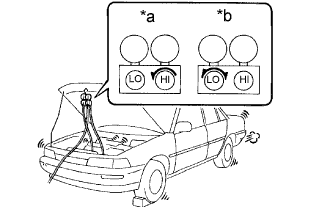

СИСТЕМА КОНДИЦИОНИРОВАНИЯ (для моделей с кондиционером с ручным управлением) > МЕРЫ ПРЕДОСТОРОЖНОСТИ |
| 1.СООБЩЕНИЯ ИНДИКАЦИИ ЗАМКА ЗАЖИГАНИЯ |
| Сообщение | Замок зажигания (положение) | Выключатель зажигания (состояние) |
| Замок зажигания в положении OFF (ВЫКЛ) | OFF (ВЫКЛ) | Выкл |
| Замок зажигания в положении ACC | ACC | Вкл (ACC) |
| Зажигание включено | ON (ВКЛ) | Включен (IG) |
| Пуск двигателя | START | Запуск |
| 2.ПРИ ВЫПОЛНЕНИИ ЛЮБОГО ИЗ ПЕРЕЧИСЛЕННЫХ НИЖЕ УСЛОВИЙ НЕОБХОДИМО ДАТЬ ДВИГАТЕЛЮ ПОРАБОТАТЬ НА ХОЛОСТОМ ХОДУ (ПРИ ЧАСТОТЕ ВРАЩЕНИЯ КОЛЕНЧАТОГО ВАЛА ДВИГАТЕЛЯ НИЖЕ 2000 ОБ/МИН) В ТЕЧЕНИЕ, ПО КРАЙНЕЙ МЕРЕ, 2 МИН. СО ВКЛЮЧЕННОЙ СИСТЕМОЙ КОНДИЦИОНИРОВАНИЯ |
| 3.НЕ РАБОТАЙТЕ С ХЛАДАГЕНТОМ В ЗАКРЫТЫХ ПОМЕЩЕНИЯХ И ВБЛИЗИ ОТКРЫТОГО ПЛАМЕНИ |
 |
| 4.ОБЯЗАТЕЛЬНО НАДЕВАЙТЕ ЗАЩИТНЫЕ ОЧКИ |
| 5.СОБЛЮДАЙТЕ ОСТОРОЖНОСТЬ, НЕ ДОПУСКАЙТЕ ПОПАДАНИЯ ЖИДКОГО ХЛАДАГЕНТА В ГЛАЗА И НА КОЖУ |
 |
Промойте пострадавший участок большим количеством холодной воды.
Протрите кожу чистым вазелином.
Немедленно обратитесь к врачу или в больницу для получения профессиональной помощи.
| 6.НИ В КОЕМ СЛУЧАЕ НЕ НАГРЕВАЙТЕ КОНТЕЙНЕР И НЕ РАСПОЛАГАЙТЕ ЕГО ВБЛИЗИ ОТКРЫТОГО ПЛАМЕНИ |
| 7.БУДЬТЕ ОСТОРОЖНЫ, НЕ РОНЯЙТЕ КОНТЕЙНЕР И НЕ ПОДВЕРГАЙТЕ ЕГО ДЕЙСТВИЮ МЕХАНИЧЕСКИХ УДАРОВ |
| 8.НЕ ВКЛЮЧАЙТЕ КОМПРЕССОР ПРИ ОТСУТСТВИИ ДОСТАТОЧНОГО КОЛИЧЕСТВА ХЛАДАГЕНТА В СИСТЕМЕ ОХЛАЖДЕНИЯ |
| 9.НЕ ОТКРЫВАЙТЕ КЛАПАН ВЫСОКОГО ДАВЛЕНИЯ КОЛЛЕКТОРА В ПРОЦЕССЕ РАБОТЫ КОМПРЕССОРА |
|  |
| *a | Неправильно |
| *b | Правильно |
| 10.БУДЬТЕ ВНИМАТЕЛЬНЫ, НЕ ДОПУСКАЙТЕ ПЕРЕПОЛНЕНИЯ СИСТЕМЫ ХЛАДАГЕНТОМ |
| 11.НЕ ВКЛЮЧАЙТЕ ДВИГАТЕЛЬ И КОМПРЕССОР СИСТЕМЫ КОНДИЦИОНИРОВАНИЯ В СБОРЕ ПРИ ОТСУТСТВИИ ХЛАДАГЕНТА В СИСТЕМЕ ОХЛАЖДЕНИЯ |